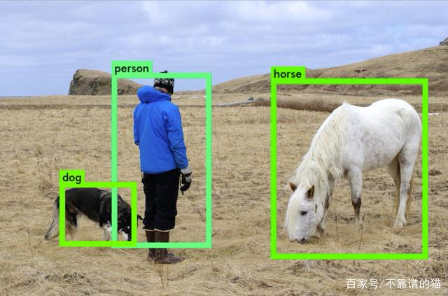
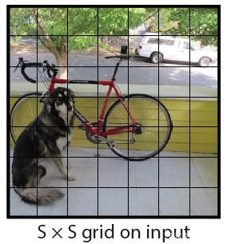
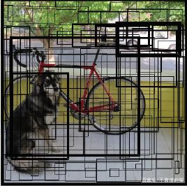
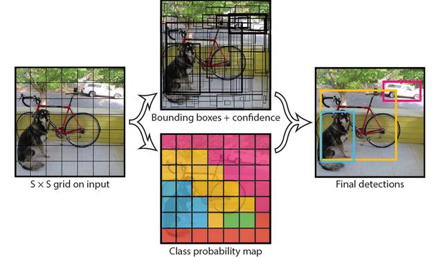

JD.zhu
Welcome you to visit my web!
| 【计算机视觉：YOLO算法简介】 |
| “You Only Look Once”或“YOLO”是一个对象检测算法的名字，这是Redmon等人在2016年的一篇研究论文中命名的。YOLO实现了自动驾驶汽车等前沿技术中使用的实时对象检测。 |
|  |
| 【实时的重要性】 |
| 人们看到图像以后，可以立即识别其中的对象、它们的位置和相对位置。这使得我们能够在几乎无意识的情况下完成复杂的任务，比如开车。因此，对汽车进行自动驾驶训练需要类似水平的反应能力和准确性。在其最基本的形式中，这样的系统必须能够分析实时视频中的道路，并能够在继续确定路径之前检测各种类型的对象及其在现实世界中的位置，所有这些都必须是实时的。 |
| 【在YOLO之前】 |
| 先前的检测系统使用分类器对测试图像的不同切片进行评估。例如，Deformable Parts Model (DPM)涉及到在图像中均匀间隔的位置上滑动窗口并在这些部件上运行分类器。R-CNN(Region-based Convolutional Neural Networks)是另一种模型，它运行一种分割算法将一幅图像分割成一个个小块，然后在这些小块上运行一个分类器。但是，速度慢、优化困难一直困扰着这种YOLO之前的系统。 |
| 【YOLO算法】 |
| YOLO将对象检测重新定义为一个回归问题。它将单个卷积神经网络(CNN)应用于整个图像，将图像分成网格，并预测每个网格的类概率和边界框。例如，以一个100x100的图像为例。我们把它分成网格，比如7x7。 |
|  |
| 然后，对于每个网格，网络都会预测一个边界框和与每个类别（汽车，行人，交通信号灯等）相对应的概率 |
|  |
| 每个边界框可以使用四个描述符进行描述：
1.边界框的中心 2.高度 3.宽度 4.值映射到对象所属的类 |
| 此外，该算法还可以预测边界框中存在对象的概率。如果一个对象的中心落在一个网格单元中，则该网格单元负责检测该对象。每个网格中将有多个边界框。在训练时，我们希望每个对象只有一个边界框。因此，我们根据哪个Box与ground truth box的重叠度最高，从而分配一个Box来负责预测对象。 |
| 最后，我们对每个类的对象应用一个称为“非最大抑制（Non Max Suppression）”的方法来过滤出“置信度”小于阈值的边界框。这为我们提供了图像预测。 |
|  |
| 【重要性】 |
| YOLO非常快。由于检测问题是一个回归问题，所以不需要复杂的管道。它比“R-CNN”快1000倍，比“Fast R-CNN”快100倍。它能够处理实时视频流，延迟小于25毫秒。它的精度是以前实时系统的两倍多。同样重要的是，YOLO遵循的是“端到端深度学习”的实践。 |